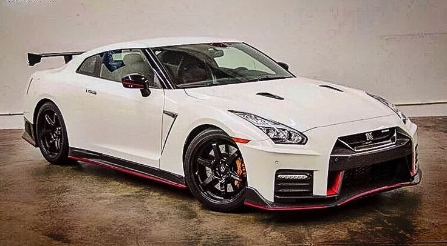
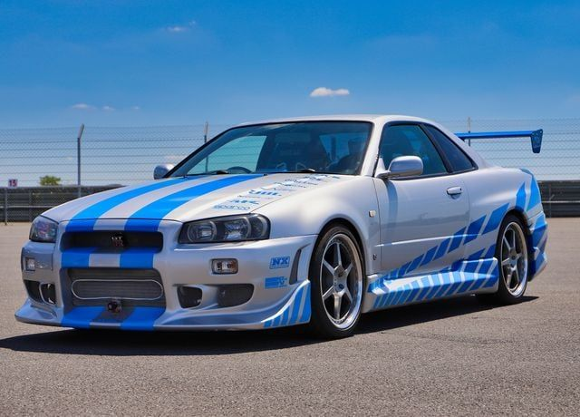
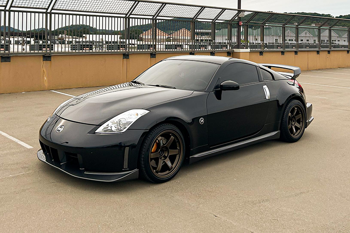
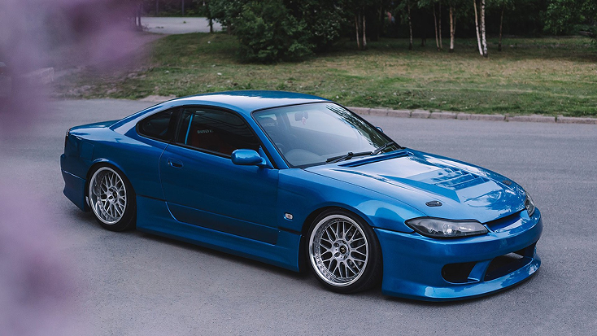

2017 Nissan GT-R NISMO AWD 2dr Coupe

Nissan Skyline GTR R32

Nissan 350Z NISMO

Nissan Silvia S15
История Nissan Skyline началась в 1957 году в Японии, когда компания Prince Motor Company представила первую модель Skyline. Изначально это был обычный легковой автомобиль, но со временем он стал развиваться и получать более мощные двигатели. В 1969 году появилась первая модель Skyline GT-R, которая прославилась своими успехами в автоспорте. Позже, в 1989 году, вышел Skyline GT-R R32, получивший мощный двигатель RB26DETT и систему полного привода. Следующие поколения R33 и R34 продолжили развивать легенду этой модели. Особенно большую популярность Nissan Skyline получил благодаря автоспорту, возможностям для тюнинга и культуре JDM. Дополнительную известность автомобилю принесла серия фильмов «Форсаж». Сегодня Nissan Skyline остаётся одним из самых узнаваемых японских автомобилей в мире.

2017 Nissan GT-R NISMO AWD 2dr Coupe

Nissan Skyline GTR R32

Nissan 350Z NISMO

Nissan Silvia S15
Развитие легенды Nissan Skyline В 1990-е годы Nissan Skyline стал настоящей легендой среди любителей спортивных автомобилей. Особое внимание привлекали модели GT-R, которые сочетали высокую мощность, современные технологии и отличные характеристики на гоночной трассе. Благодаря этому Skyline получил прозвище «Годзилла» — так поклонники и автомобильные журналисты называли GT-R R32 после его успехов в автоспорте. В 1995 году появился Skyline GT-R R33. Он получил улучшенную управляемость и обновлённую конструкцию. Несмотря на то что R33 был крупнее своего предшественника, он продолжил развитие спортивной линейки Nissan В 1999 году компания представила Skyline GT-R R34, который быстро стал культовым автомобилем. Он отличался узнаваемым внешним видом, мощным шестицилиндровым двигателем RB26DETT и передовыми для своего времени технологиями. Одной из особенностей R34 был дисплей на приборной панели, показывавший информацию о работе различных систем автомобиля. В начале 2000-х годов Nissan Skyline получил ещё большую известность благодаря автомобильным видеоиграм, тюнинг-культуре и фильмам. Особенно сильно на популярность R34 повлияли фильмы серии «Форсаж», в которых спортивные Nissan стали символом уличных гонок и автомобильной культуры. В 2002 году производство Skyline GT-R R34 завершилось. Позже Nissan представила отдельную модель Nissan GT-R R35, которая вышла в 2007 году. Она сохранила спортивный характер предшественников, но уже не носила название Skyline GT-R. R35 получил новый двигатель V6 с двумя турбинами и современные электронные системы управления. Сегодня Nissan Skyline продолжает оставаться важной частью истории японского автомобилестроения. Старые поколения ценятся коллекционерами, а многие владельцы модифицируют их, улучшая двигатель, подвеску и внешний вид. Skyline стал не просто автомобилем, а символом целой автомобильной культуры, объединяющей скорость, инженерные технологии и индивидуальный стиль.